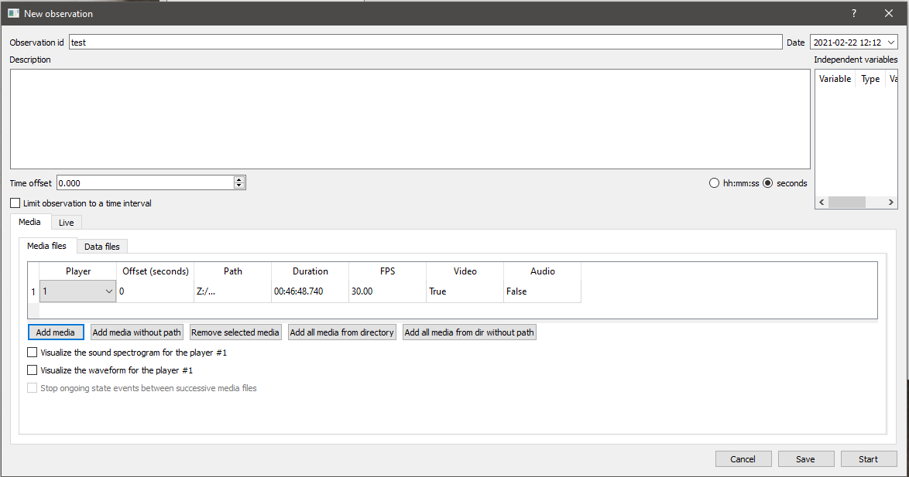
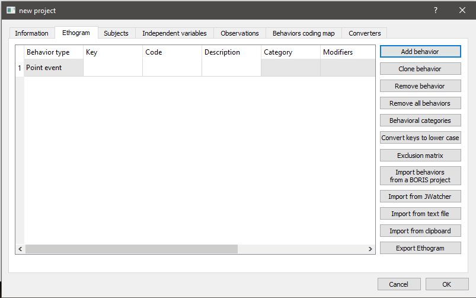

Exporting BORIS annotations for SimBA
BORIS has options for saving human annotations in various formats - and we need to make sure that the BORIS output files are saved in a format that is compatible with SimBA. The screenshot below shows the format of the tabular BORIS CSV format that SimBA expects:

To generate BORIS data in this file format, begin by creating a new project with seconds time format:

Next, create a new observation in BORIS:
{kind=link}
When you set up your ethogram, name your behaviors the same way as they are named in your simba project. If that is not possible (because historical data), rename your simba classifier names to match the names in the BORIS annotations. We need a way of knowing what behaviors in SimBA matches the behaviors in Boris.
{kind=link}
Once done, export your annotations as Tabular events:

Now you have your data in the SimBA-required format - head to the tutorial on Appending third-party annotations in SimBA to learn how to append it to your feature and pose data.
Author Simon N